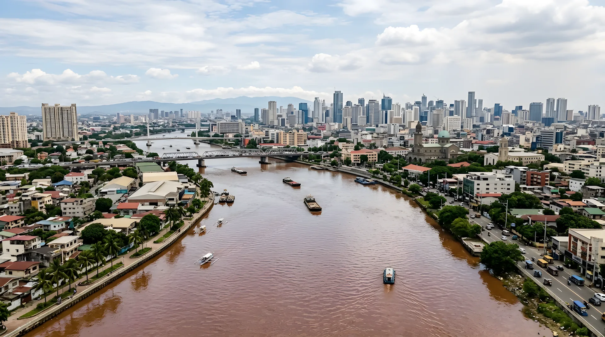
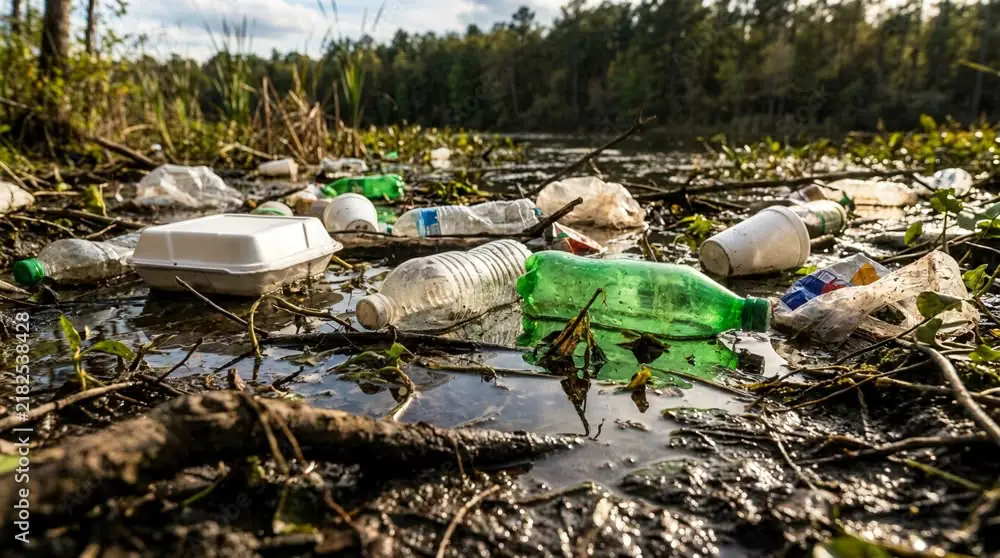
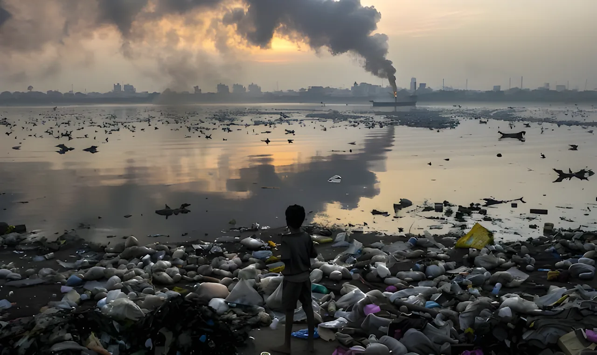
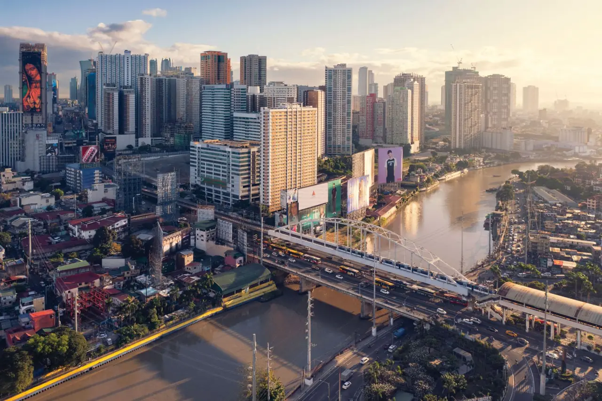

Water pollution in the Pasig River
Understand the Pasig River. Help it recover.
Learn what pollutes Metro Manila’s main river, what that pollution harms, and what the latest data says about its recovery.
Start exploringHow this site works
One river, three chapters
The River page tells the story in three chapters. Read them in order, or jump to the one you need. Every figure is credited to a source.

Chapter 1 · What it is
What is the Pasig River?
Its size, route, and how it went from a lifeline to “biologically dead.”
27 km · Read chapter 1 →

Chapter 2 · The problem
What pollutes it, and what does that harm?
The four main sources of pollution and their effects on wildlife, people, and Manila Bay.
65% from households · Read chapter 2 →
Chapter 3 · Progress
Is it getting better?
The latest water-quality data, what is being done, and what you can do.
−43% fecal coliform · Read chapter 3 →
Why it matters
Progress does not mean full recovery
The river is cleaner in some ways than it was in 1990, when it was declared biologically dead. But in 2025, some water-quality indicators still got worse.
See the latest dataAbout the project
Why we made this site

Agos means “flow” in Filipino. We chose it because the Pasig River’s future depends on what flows into it, from homes, factories, and streets across Metro Manila.
The Pasig River is a 27-kilometer river at the heart of Manila’s history. Decades of urbanization polluted it, but it is slowly recovering. Agos Pasig is a student project that explains its story and shows how communities can help restore it.
We believe nature and urban progress can coexist, and the Pasig River can prove it.
How we handle facts
Our approach
Sourced figures only
Every number is credited to a source, listed in the Sources bar at the bottom of its page.
Official data first
We rely on DENR, ADB, and peer-reviewed studies wherever possible.
Disputed claims are labeled
When a finding is contested, like the 2021 ocean-plastic ranking, we say so.
The team
Meet the team
Questions or corrections? Email any of us.
Miguel Luis Arocena
lr.mlarocena@mmdc.mcl.edu.ph
UI/UX design and
web development
Designs the interface and builds the website.
Tracie Andrei Ignacio
lr.taignacio@mmdc.mcl.edu.ph
UI/UX design
Designs the layouts and navigation so the site is easy to use.
Mica Ella Jane Isidro
lr.mejisidro@mmdc.mcl.edu.ph
Content and research
Researches and writes about the river’s history and recovery.
Nikki Diane Rabano
lr.ndrabano@mmdc.mcl.edu.ph
Content and research
Researches and writes about the causes and effects of pollution.